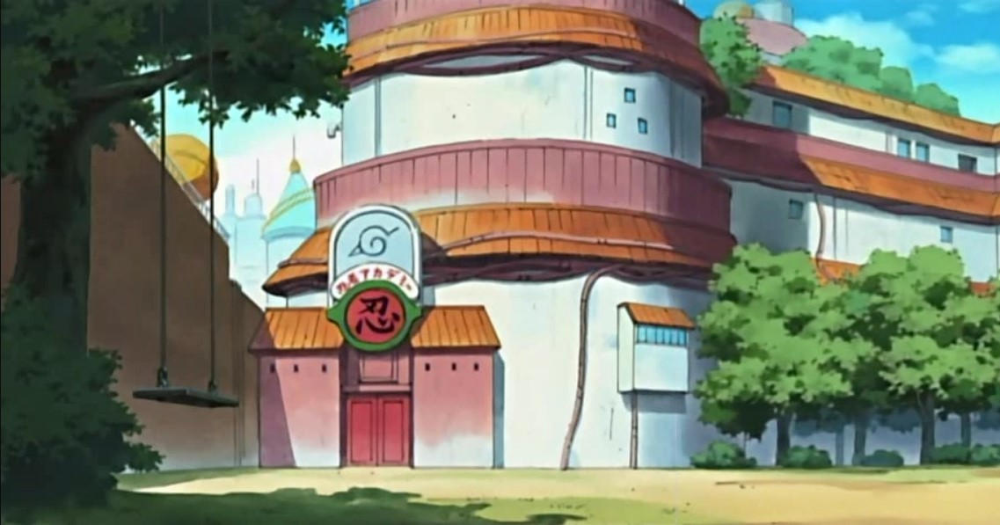
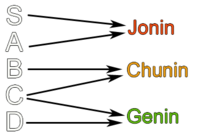
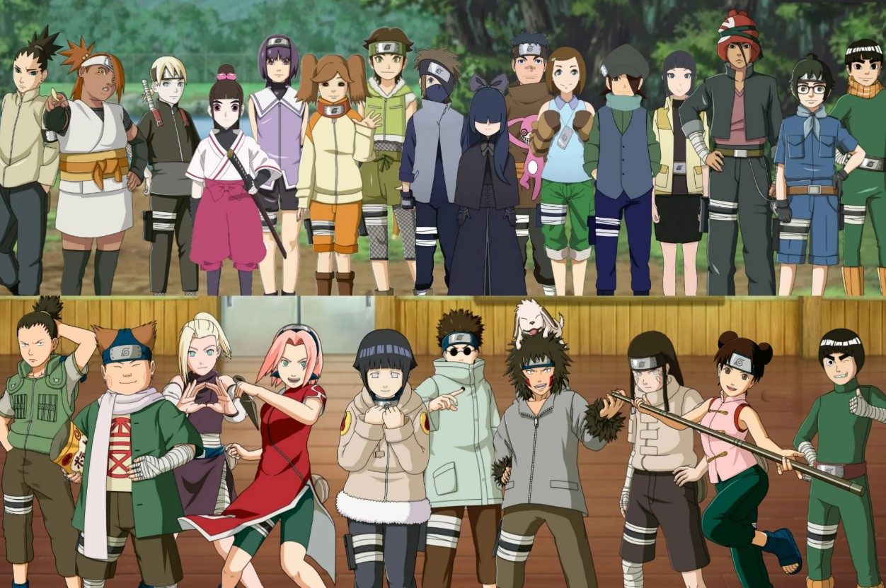
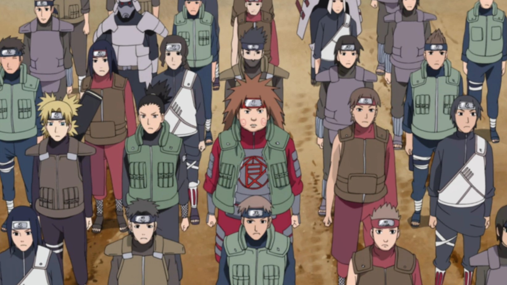
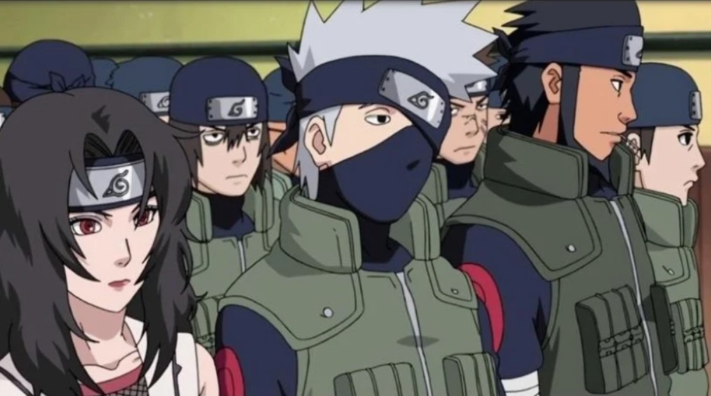

Akademi Ninja Konohagakure
Akademi (忍者学校, Akademī; Secara harfiah berarti "Sekolah Ninja") adalah sebuah bangunan besar yang berada di Konohagakure, yang terletak langsung di dasar Monumen Hokage. Di tempat ini calon Ninja dilatih dan Ninja resmi menerima tugas-tugas mereka. Tempat ini didirikan oleh Hokage Kedua karena untuk kebutuhan militer.
Tingkatan Resmi Ninja
Akademi yaitu tempat calon-calon ninja memulai latihannya. Mereka belum dapat disebut sebagai ninja sebelum mereka lulus akademi. Murid-murid di akademi diberikan materi dan latihan-latihan beladiri ninja tingkat dasar, seperti jurus bunshin no jutsu, kawarimi no jutsu, dan lain-lain. Sesudah menjalani ujian dan lulus dari akademi, murid-murid hendak menerima sebuah ikat kepala dari kain dengan sebuah lapisan metal di tengahnya, dan di atas lapisan metal tersebut tercetak lambang desa. Ikat kepala ini sering juga disebut dengan nama "pelindung kepala".
Genin
Sesudah lulus dari akademi, seorang lulusan hendak diberi tingkatan Genin. Para Genin ini sedang masuk ke dalam bimbingan seorang Jounin. Genin yaitu ninja kelas rendah yang hanya menjalankan misi kelas D. Misi-misinya juga kadang-kadang sangat gampang. Seperti menangkap kucing yang kabur. Biasanya para Genin diwujudkan ke dalam tim berjumlah 4 orang, dengan satu Jounin pembimbing. Tetapi Naruto pernah diberi misi level C untuk mengawal Tazuna, yang malah berganti menjadi misi level A karena hal benar ninja pelarian yang menyerang. Tim yang diberi inti Genin yaitu tim yang sudah ditentukan sebelumnya dan sudah dibagi ketika melaksanakan ujian kelulusan. Kakashi melaksanakan ujian yang sulit. Sesudah kiranya cukup mapan, para Genin hendak direkomendasikan menjadi yang dipersiapkan menjadi Chuunin di ujian Chuunin. Tidak semua Genin anak-anak, adapula yang sudah berusia setengah baya dikarenakan tidak pernah lulus ujian Chuunin.
Lihat Selengkapnya
Chuunin
Sesudah para Genin lolos ujian Chuunin, mereka hendak dinaikkan menjadi Chuunin oleh Hokage. Para Chuunin sudah setingkat kapten tim dalam tim 3 orang Genin. Terkadang Chuunin juga dipasangkan dengan Genin. Para Chuunin dapat mengambil misi tingkat B dan C. Misi yang dilakukan para Chuunin tidaklah terlalu sulit, tetapi tetap berisiko dan berbahaya dibandingkan Genin. Banyak para Chuunin ini jauh semakin sedikit dibanding Genin yang benar di lingkungan kehidupan Naruto.
Lihat Selengkapnya
Jounin
Jounin yaitu tingkat tertinggi dalam tingkatan resmi ini. Para Jounin ini yaitu daya utama desa-desa tersembunyi. Para Jounin biasa diberi misi untuk menyerang kawasan musuh, pembunuhan, sabotase, dsb-nya. Misi yang mereka emban mengharuskan mereka untuk berpikir cepat dan tidak boleh sembarangan atau nyawa mereka hendak melayang. Jounin dapat mengambil misi tingkat A dan tingkat S. Para Jounin ini sangatlah kuat dan melawan mereka tanpa persiapan dewasa yaitu gerakan bunuh diri. Para Jounin juga benar yang diberi tugas sebagai pembimbing tim Genin Rookie. Mereka juga bertindak sebagai guru untuk para Genin tersebut. Perekrutan Jounin mampu menempuh Tingkat Chuunin maupun Anbu.
Lihat Selengkapnya